#Favorites
Manhwa and Manga
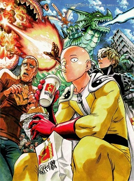
One Punch Man
Saitama, the protagonist, is an exceptionally powerful hero who easily defeats the monsters or other villains with a single punch. However, due to his overwhelming strength, Saitama has become bored with his powers and is constantly trying to find stronger opponents who can fight him.
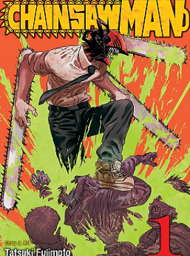
Chainsaw Man
Following a betrayal, a young man left for dead is reborn as a powerful devil-human hybrid after merging with his pet devil and is soon enlisted into an organization dedicated to hunting devils.
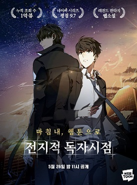
Omniscient Reader's Viewpoint
An ordinary businessman whose favorite comic has just come to life; as he grapples with his newfound reality, he tries to figure out how this happened in the first place. When the world is faced with destruction, only one man knows how it ends—because he is the Omniscient Reader.
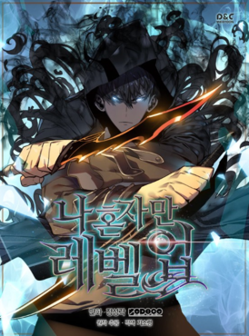
Solo Leveling
In a world where hunters, humans who possess magical abilities, must battle deadly monsters to protect the human race from certain annihilation, a notoriously weak hunter named Sung Jinwoo finds himself in a seemingly endless struggle for survival.
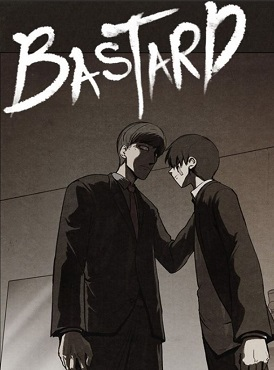
Bastard
The plot takes place in Korea were a teenager is forced, by his dad, to commit murder. Well in fact his dad does the killing, he just lures in women and knocks out the victims with a hammer. The boy (Jin) has been doing this since he can remember so he just thinks it's natural.
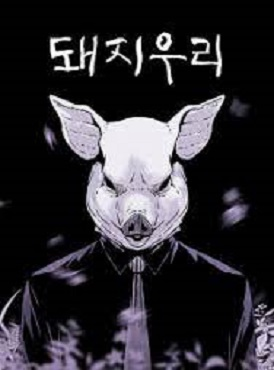
Pigpen
A relaxing getaway in paradise, or a death trap? A young man wakes up on a breathtaking beach, but he has no idea who he is or how he got there. Try as he might to piece it all together, untangling this mind-bending mystery won't be easy when every clue leads to more maddening questions… and the family that welcomes him into their home is not what they seem.
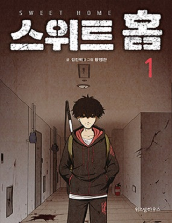
Sweet Home
After an unexpected family tragedy, a reclusive high school student is forced to leave his home -- only to face something much scarier: a reality where monsters are trying to wipe out humanity. Now he must fight alongside a handful of reluctant heroes to try and save the world before it's too late.
K-drama
Start up
Set in South Korea's fictional Silicon Valley called Sandbox, Start-Up tells the story of people in the world of startup companies. Seo Dal-mi (Bae Suzy) is a bright and ambitious young woman who dreams of becoming Korea's Steve Jobs. Dal-mi doesn't have a fancy background but she's passionate about her work.
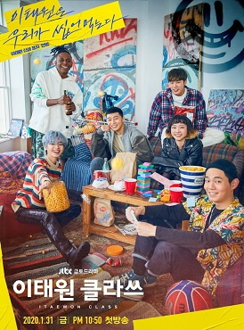
Itaewon Class
In a colorful Seoul neighborhood, an ex-con and his friends fight a mighty foe to make their ambitious dreams for their street bar a reality.
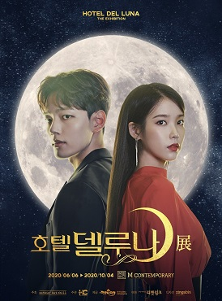
Hotel Del Luna
Due to a huge sin committed more than a millennium ago, the hotel catering to the dead has been bound to her soul. As a result of manipulation by the deity Mago (Seo Yi-sook), Jang Man-wol meets Gu Chan-sung's father (Oh Ji-ho) and makes a deal: in exchange for his life, his son will work for her 20 years later.
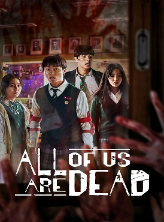
All of us are dead
A high school becomes ground zero for a zombie virus outbreak. Trapped students must fight their way out or turn into one of the rabid infected. It was a normal school day for the students of a Korean high school-until a student returns from the school's science lab, infected by an unknown virus.
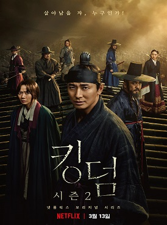
Kingdom
Set in Korea's medieval Joseon period, it tells the story of Crown Prince Lee Chang (Ju Ji-hoon), who becomes embroiled in a coup/political conspiracy and is forced to embark upon a mission to investigate the spread of a mysterious undead plague that has beset the current emperor and the country's southern provinces.
Anime
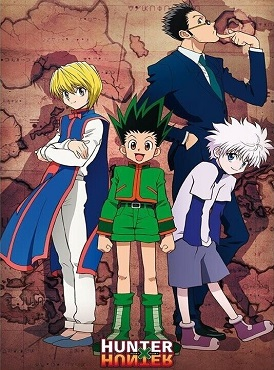
Hunter X Hunter
The story focuses on a young boy named Gon Freecss who discovers that his father, who left him at a young age, is actually a world-renowned Hunter, a licensed professional who specializes in fantastical pursuits such as locating rare or unidentified animal species, treasure hunting, surveying unexplored enclaves, or hunting down lawless individuals.
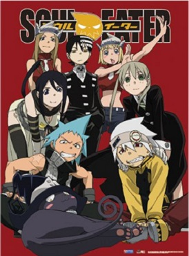
Soul Eater
"Soul Eater" follows three teams of Meisters and weapons as they strive to become the strongest protectors of humanity at an Academy founded by Lord Death, who has bound his soul to a city under which the first demon lord's remains reside.
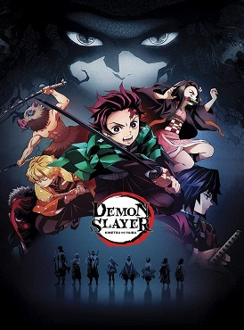
Demon Slayer
A boy raised by boars, who wears a boar's head, boards the Infinity Train on a new mission with the Flame Pillar along with another boy who reveals his true power when he sleeps. Their mission is to defeat a demon who has been tormenting people and killing the demon slayers who oppose it.
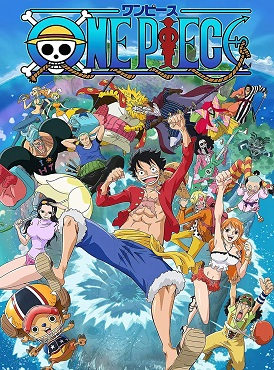
One Piece
Follows the adventures of Monkey D. Luffy and his pirate crew in order to find the greatest treasure ever left by the legendary Pirate, Gold Roger. The famous mystery treasure named "One Piece". Wealth, Fame, Power.
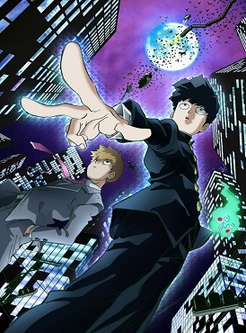
Mob Psycho 100
A psychic middle school boy tries to live a normal life and keep his growing powers under control, even though he constantly gets into trouble.